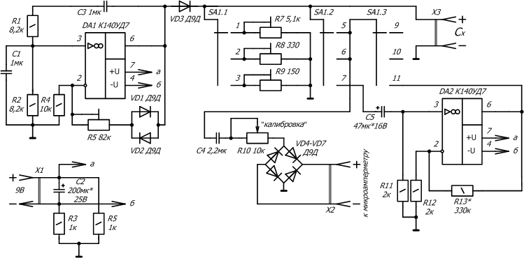

Измеритель емкости на операционных усилителях
Предлагаемый измеритель предназначен для любительских измерений, не требующих высокой точности. При своей простоте он обладает довольно широкими пределами измерений. Он выполнен в виде приставки и позволяет использовать уже имеющиеся у радиолюбителя блоки питания и измерительные приборы — стрелочные микроамперметры.
Прибор имеет следующие характеристики. Фактический диапазон измеряемых величин — 0,5…30000 мкФ — перекрывается поддиапазонами 0…50, 0…500 и 0…30000 мкФ. При напряжении питания 9 В потребляемый ток не превышает 10 мА.

Рис. 1 - Схема прибора для измерения емкости на операционных усилителях
Принцип работы прибора основан на измерении величины пульсации выпрямленного напряжения. Синусоидальное напряжение частотой 16…20 Гц с генератора на микросхеме DA1 выпрямляется диодом VD3 и далее поступает на измеряемый конденсатор и один из параллельно подключенных ему нагрузочных резисторов R7-R9. Чем меньше резистор, тем больше пульсации. С увеличением емкости конденсатора величина пульсаций падает. Далее пульсирующее напряжение через конденсатор С4 калибровочный переменный резистор R10 и выпрямительный мост на диодах VD4-VD7 поступает на измерительный прибор — микроамперметр.
При измерении больших емкостей уровень низкочастотных пульсаций сильно уменьшается, и для их измерений в прибор введен усилительный каскад на микросхеме DA2. Генератор синусоидальных колебаний представляет собой один из возможных вариантов RC-генератора с мостом Вина.
Микросхемы К140УД7 (DA1, DA2) можно заменить любыми ОУ общего назначения. Диоды VD1-VD7 любые германиевые высокочастотные. Конденсаторы C1, C3, C4 — серии К73-17 (возможно параллельное соединение конденсаторов меньшей емкости), С2, С5 — К50-16. Подстроечные резисторы R6-R9 — СПЗ-38 или аналогичные. Переменный резистор R10 — типа СП2-2. Переключатель SA1 — малогабаритный ЗПЗН.
Настройку прибора производят начиная с генератора DA1. Подстроечным резистором R6 устанавливают на выходе максимальную амплитуду синусоидального сигнала. К розетке Х2 подключают измерительный прибор, например, многопредельный стрелочный ампервольтметр в режиме микроамперметра, а его предел устанавливают на 60-200 мкА. При наличии отдельного микроамперметра чувствительностью до 200 мкА следует отдать предпочтение ему.
Резисторы R7-R9 устанавливают в положение, близкое к максимальному сопротивлению, переключатель SA1 — в первое положение. Регулятором R10 «калибровка» устанавливают стрелку микроамперметра на максимальное значение шкалы, что будет соответствовать значению емкости Cx= 0. Затем подключают к X3 образцовые конденсаторы и градуируют шкалу. Масштаб шкалы можно в небольших пределах изменять подстроечным резистором R7 (R8 — для второго и R9 — для третьего диапазона), после чего необходимо заново провести калибровку. Аналогично проводится настройка при установке SA1 во второе положение. При настройке в третьем диапазоне следует убедиться в правильной работе микросхемы DA2 и установить нужное усиление подбором резистора R13. Если на втором пределе стрелка не отклоняется до конца шкалы, можно увеличить емкость конденсатора С4. Точность прибора во многом зависит от точности образцовых конденсаторов и градуировки шкалы.